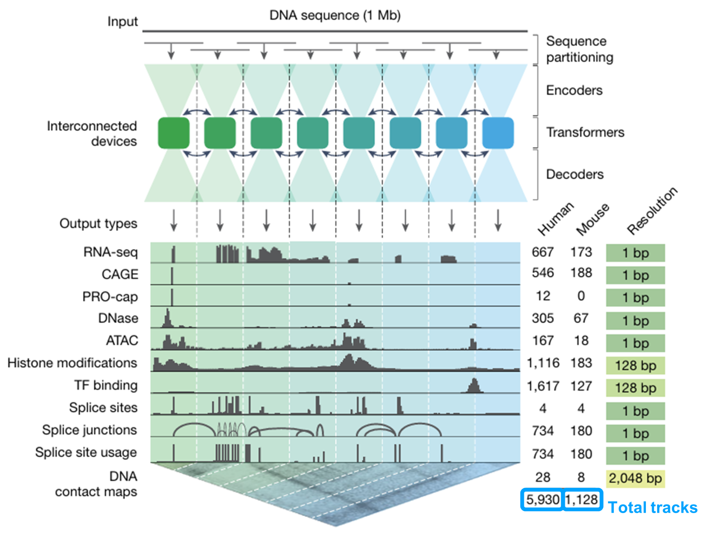

Figure 1 Panel A¶

패널 A에서는 AlphaGenome의 전체 아키텍처와 예측 대상이 한 장에 요약되어 있습니다. 가장 먼저 눈에 띄는 점은 입력 길이입니다. 이 모델은 약 1 Mb, 즉 약 백만 염기 길이의 DNA 서열을 입력으로 받습니다. 이는 기존의 short-context 모델보다 훨씬 긴 범위로, 변이 바로 주변의 국소 motif뿐 아니라 더 멀리 떨어진 regulatory context까지 함께 반영하려는 설계라고 볼 수 있습니다.
그림의 위쪽 구조를 보면, 이 긴 입력 서열은 먼저 여러 구간으로 sequence partitioning 되고, 그 다음 encoders → transformers → decoders 를 거치면서 처리됩니다. 여기서 encoder 단계는 각 구간의 서열 패턴을 비교적 국소적으로 읽어 representation으로 바꾸는 역할을 하고, transformer 단계는 이렇게 만들어진 representation들 사이에서 장거리 정보를 교환해 멀리 떨어진 위치들 사이의 의존성을 통합하는 역할을 합니다. 마지막 decoder 단계에서는 이 통합된 정보를 바탕으로 각 기능적 출력 track을 복원합니다. 즉, 구조적으로 보면 AlphaGenome은 짧은 범위의 local sequence feature 와 긴 범위의 long-range genomic context 를 동시에 다루려는 모델이라고 이해할 수 있습니다.
패널 A의 또 다른 핵심은, 이 모델이 단일 output만 예측하는 것이 아니라 매우 다양한 functional genomics modality 를 동시에 예측한다는 점입니다. 그림에 제시된 출력은 RNA-seq, CAGE, PRO-cap, DNase, ATAC, histone modifications, TF binding, splice sites, splice junctions, splice site usage, 그리고 DNA contact maps까지 포함합니다. 즉, 발현량, 전사 시작, chromatin accessibility, 히스톤 상태, TF 결합, splicing, 3차원 구조를 하나의 공통 framework 안에서 함께 다루고 있는 것입니다.
또 오른쪽 숫자를 보면 각 modality마다 사람과 마우스에서 예측하는 track 수도 매우 많습니다. 예를 들어 RNA-seq은 사람에서 667개, 마우스에서 173개 track을 예측하고, CAGE는 사람 546개, 마우스 188개, histone modification은 사람 1,116개, 마우스 183개, TF binding은 사람 1,617개, 마우스 127개 track을 예측합니다. 여기서 말하는 track은 단순히 서로 다른 유전자 하나하나를 뜻하는 것이 아니라, 조직, 세포 유형, 세포주, 실험 조건별로 구분된 개별 functional genomics signal 채널이라고 이해하는 것이 맞습니다. 즉, 같은 modality라도 brain, liver, blood, 특정 cell line처럼 서로 다른 biological context에 대해 각각 별도의 출력을 갖는 구조입니다.
아래쪽 총합을 보면 AlphaGenome은 사람에서 5,930개, 마우스에서 1,128개의 track을 다룹니다. 즉, 이 모델은 “한 서열에서 하나의 답”을 내는 구조가 아니라, 하나의 1 Mb 입력으로부터 수천 개의 biologically distinct output track 을 동시에 생성하는 foundation model에 가깝습니다. 이 점이 기존의 single-task 또는 modality-specific 모델과 가장 크게 구별되는 부분 중 하나입니다.
또 이 패널은 task마다 출력 해상도(resolution)가 다르다는 점도 보여줍니다. RNA-seq, CAGE, PRO-cap, DNase, ATAC, splice sites, splice junctions, splice site usage는 주로 1 bp resolution 으로 예측됩니다. 즉, 정확히 어느 위치에서 신호가 생기는지를 single-base 수준으로 비교적 세밀하게 다루려는 것입니다. 반면 histone modifications와 TF binding은 128 bp resolution, DNA contact maps는 훨씬 더 거친 2,048 bp resolution 을 사용합니다.
이 차이는 각 signal의 생물학적 성격과도 관련이 있습니다. 예를 들어 splice site나 transcription start site처럼 위치가 비교적 정확히 정의되는 신호는 높은 해상도가 중요합니다. 반면 histone mark나 TF ChIP signal은 보통 더 넓은 구간에서 peak 형태로 나타나고, DNA contact map은 애초에 넓은 genomic bin 사이의 상호작용을 다루기 때문에 더 거친 resolution이 자연스럽습니다. 즉, AlphaGenome은 모든 출력을 무조건 같은 해상도로 다루는 것이 아니라, 각 task의 특성에 맞게 resolution을 다르게 설계한 모델이라고 볼 수 있습니다.
정리하면, 패널 A의 핵심 메시지는 다음과 같습니다. AlphaGenome은 1 Mb의 긴 DNA 문맥을 입력으로 받아, encoder–transformer–decoder 구조를 통해 local sequence information과 long-range context를 통합하고, 그 결과를 바탕으로 RNA, chromatin, splicing, DNA contact map에 이르는 여러 modality와 수천 개의 track을 하나의 unified framework 안에서 동시에 예측합니다. 그리고 이 과정에서 출력 해상도를 task별로 다르게 설정함으로써, 폭넓은 coverage와 biologically meaningful precision을 동시에 추구하고 있습니다.
it takes a 1 Mb DNA sequence, integrates long-range context through encoder–transformer–decoder stages, and predicts thousands of tracks across 11 functional genomics modalities with task-specific output resolutions.
추가 설명이 필요하면 Supplementary Notes에서 Panel A 보충자료를 이어서 정리할 수 있습니다.